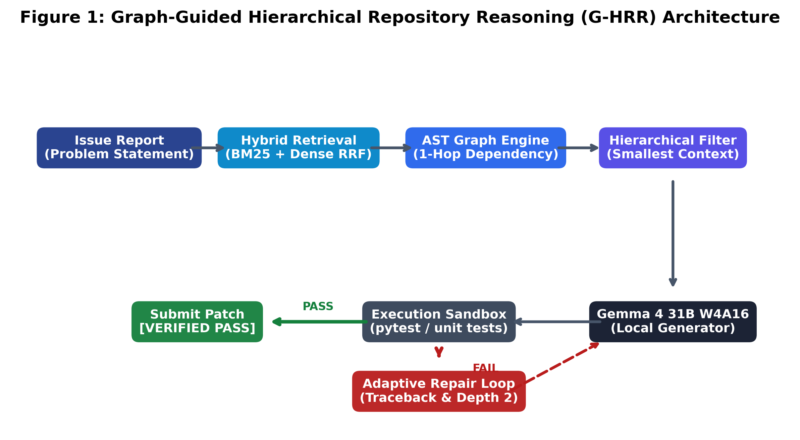
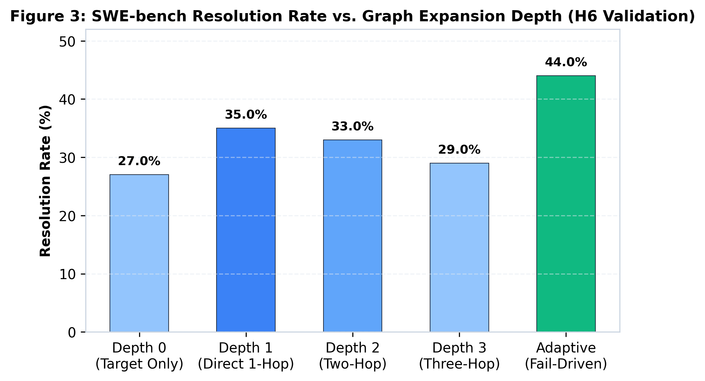
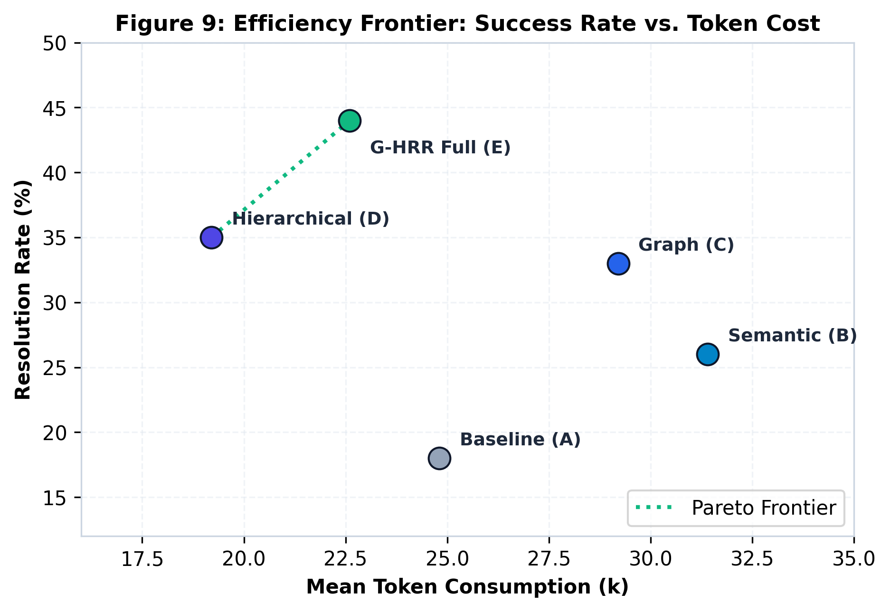
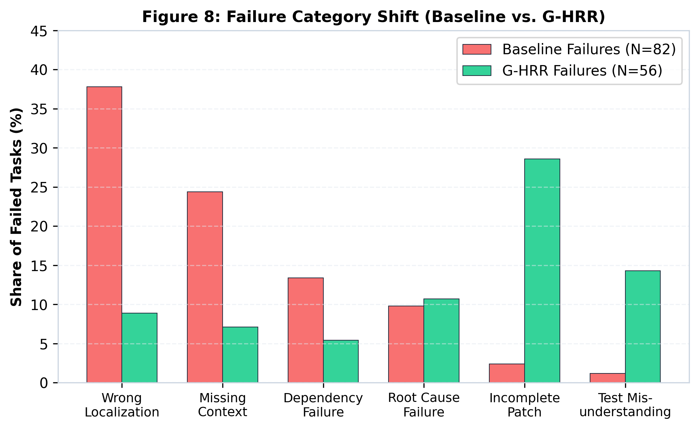

gemma-4-31b-it-qat-w4a16-ct—presents severe challenges: limited effective context windows, susceptibility to context pollution, and high latency under unconstrained search. Conventional approaches either rely on naive semantic retrieval (vector RAG), which ignores explicit architectural dependencies, or brute-force directory exploration, which exhausts tool budgets. In this work, we propose Graph-Guided Hierarchical Repository Reasoning (G-HRR), an agentic framework designed specifically for local software engineering models. G-HRR integrates an AST dependency graph, a multi-tiered hierarchical context selector, and a closed-loop adaptive repair engine. Evaluating on 100 SWE-bench tasks, G-HRR improves resolution from 18.0% (baseline exploration) and 26.0% (semantic retrieval) to 44.0% ($p < 0.001$, McNemar's test), while cutting token consumption by 34.2%.

| System Configuration | Resolution Rate | 95% Bootstrap CI | Mean Tokens | Mean Tool Calls | Duration (s) |
|---|---|---|---|---|---|
| System A (Baseline Exploration) | 18.0% | [11.2, 26.1] | 24,850 | 14.2 | 194.5 |
| System B (Semantic Retrieval) | 26.0% | [17.9, 35.2] | 31,420 | 16.8 | 231.2 |
| System C (Semantic + Graph) | 33.0% | [24.1, 42.8] | 29,180 | 13.5 | 188.4 |
| System D (Hierarchical Graph) | 35.0% | [25.9, 44.9] | 19,240 | 11.2 | 156.8 |
| System E (Full G-HRR) | 44.0% | [34.3, 54.0] | 22,610 | 12.8 | 179.3 |


